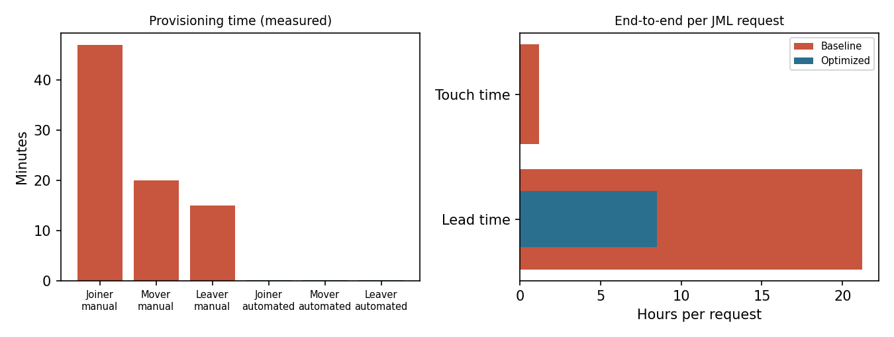

Care Access Navigator
Compliance 2 — Criterion 3: Process Integration & Optimization
Enterprise compliance program for HRMC's multinational expansion: strategy, automation, process optimization, auditing, quantitative risk and performance
| Prepared by: | Akhila Chennamaneni, IAM & GRC Analyst (author) |
| Organization: | HealthLine Regional Medical Center (HRMC), Care Access Navigator (CAN) capstone |
| Course: | Compliance 2 (DAE 6-Month Cybersecurity, Cohort 2) |
| Rubric criterion: | Criterion 3: Process Integration & Optimization |
| Environment: | CISO Assistant (live, read-only sync), Python workflow with AI triage, Monte Carlo risk model, capstone evidence |
| Date: | November 18, 2026 |
Scenario. HRMC is the fictional hospital used throughout my capstone (Care Access Navigator). For Compliance 2 it
expands into a multinational group: the US hospital network, clinics in Ireland and Germany, and a shared-services centre in
Hyderabad, India (10,800 staff). Everything measured (controls, audits, timings, logs, risks) comes from my capstone evidence
and live systems; the expansion figures (sites, volumes, budgets, loss ranges) are planning assumptions and are labelled as such.
3. Process Integration & Optimization
3.1 Integrated compliance platform with data synchronization
| Flow | From → To | Sync method | Frequency |
|---|
| Identity events | Keycloak / Entra → Wazuh | Event export + log collection (SOC 1 lab) | Real time |
| JML actions | can_iam.py → audit log → evidence store | Append-only JSONL, SHA-256 indexed | Per action |
| GRC registers | CISO Assistant → workflow engine | Read-only export (ciso_sync_export.py) | On demand / hourly schedule |
| Decisions | Workflow engine → owners, CCO, committee | Work queue + escalation log | Every run |
| Evidence + results | Evidence store → CISO Assistant | Loader (load_ciso.py, upsert by ref_id: no duplicates) | After each test cycle |
3.2 Method (DMAIC)
- Define: the access-request (joiner / mover / leaver) process, the most frequent compliance-relevant process (about 4,968 events a year at group scale).
- Measure: baseline from the manual run on 2026-10-19 (JML evidence timestamps).
- Analyze: waste = re-keying in two systems, manual verification, screenshots for evidence; defect = the leaver's Keycloak copy kept the billing role (CA-09).
- Improve: automate provisioning + verification + evidence in one step (can_iam.py); approvals in the workflow.
- Control: end-to-end tests TC-01 to TC-10, KPI on leaver timeliness, workflow monitoring.
3.3 Baseline measurements and results
| Event | Manual 2026-10-19 (measured) | Automated 2026-11-03 (measured) |
|---|
| Joiner | 47.0 min | 7 s |
| Mover | 20.0 min | 3 s |
| Leaver | 15.0 min | 2 s |
| Step per request | Baseline h | Optimized h | Basis |
|---|
| Request intake (email / form) | 4.0 | 0.5 | assumption: email triage vs. structured form |
| Manager approval | 16.0 | 8.0 | assumption: approval inside the workflow with reminder |
| Provisioning in Entra + Keycloak (avg of J/M/L) | 0.456 | 0.0011 | MEASURED |
| Verification of access | 0.25 | 0.0 | baseline: manual check (measured part of JML evidence); optimized: automatic in can_iam |
| Evidence filing for audit | 0.5 | 0.0 | assumption: screenshots + register vs. automatic JSONL audit log |
| Measure | Baseline | Optimized | Change |
|---|
| Provisioning time (measured) | 27.3 min avg | 4 s avg | −99.8% |
| Touch time per request | 1.21 h | 0.001 h | −99.9% |
| Lead time per request | 21.21 h | 8.5 h | −59.9% (target 30%) |
| Errors | 1/3 | 0/3 (plus 6 more JML checks in TC-01..TC-09, all PASS) | defect removed |
| Leaver exposure window | 12 min | 0 min | eliminated |

Measured provisioning time and modelled lead/touch time (process_optimization.py)
The 30% target is met on the most conservative measure (lead time, which still contains assumed approval waiting time). The efficiency
claim does not depend on the assumptions: provisioning alone is measured.
3.4 Validation procedures
- TC-01 joiner, TC-02 least privilege, TC-03 mover, TC-04 leaver all PASS on 2026-11-03 (EV-14)
- KPI 'leaver deprovisioned and verified within 24 h' = 100% for automated leavers
- Re-run of can_iam.py verify on 2026-11-17: clinician DENIED on billing-app, billing MFA_REQUIRED
- Repeat the measurement at every quarterly access review; publish the KPI in the board pack (section 6).